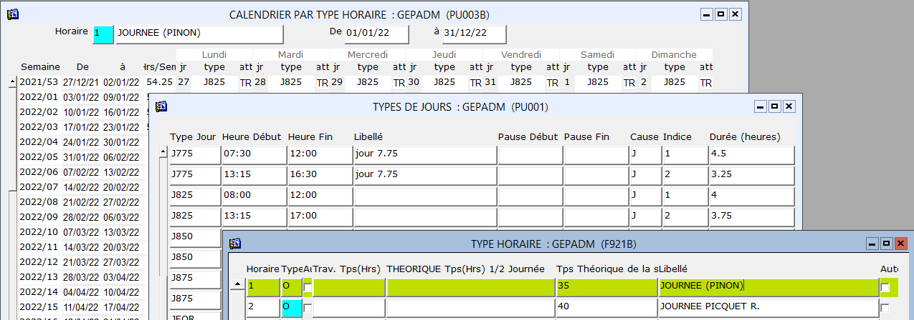
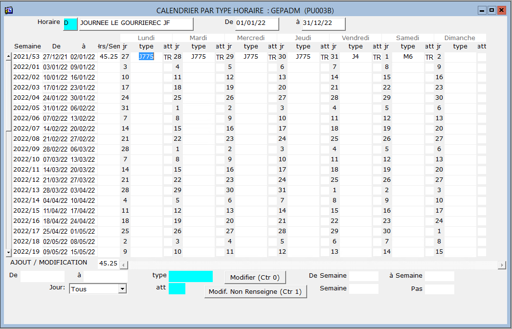

Retour
Accueil usine
Accueil agence
Prise en main
Requêtes (F2)

Sites Internet
|
|
Calendrier / Type horaire |
A chaque type horaire est associé un calendrier et à chaque jour doit être attribué un type jour
exemple : Type Horaire = 1 > semaine 2021/53 - Lundi = J825
Il est possible de recopier la ligne précédente en appuyant sur la touche raccourci F12
Attention : Chaque type jour correspond à une plage horaire autorisée de pointage en entrée / sortie et un temps par défaut à cumuler..

